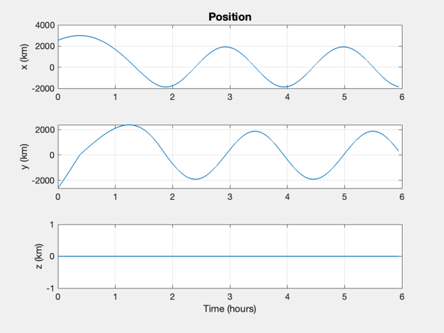
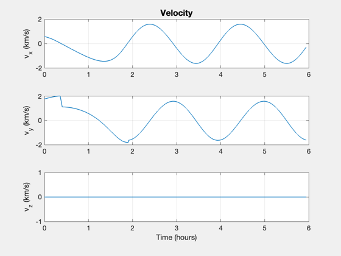
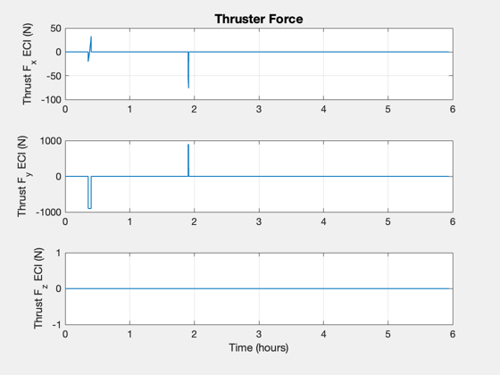
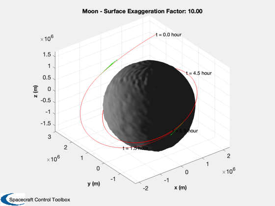

Lunar Orbit Insertion Demo
Simulate a spacecraft in a hyperbolic lunar orbit entering lunar orbit and doing a circularization burn. This script can be modifed for any starting hyperbolic orbit.
RHSLunarOrbit has just the lunar gravity. It models point mass motion in the gravity field. This script uses OrbitLoweringManeuvers to schedule and implement the orbit change maneuvers.
See also OrbitLoweringManeuvers, RHSLunarOrbit, VInfRPToRV, PlotLunarOrbit, RPRA2AE, TimeOfFlightHyperbola, Period, SunV1, Constant, Plot2D, TimeLabl, Date2JD, RK4 -------------------------------------------------------------------------
Contents
%-------------------------------------------------------------------------- % Copyright (c) 2016 Princeton Satellite Systems, Inc. % All rights reserved. %-------------------------------------------------------------------------- % Since 2016.1 %--------------------------------------------------------------------------
Constants
rMoon = 1738;
dayToSec = 86400;
muMoon = Constant('mu moon');
User inputs
dateEncounter = [2016 5 10 1 30 0]; dT = 1; % integration time step seconds % Elements of the hyperbolic orbit rP = 3000; % km i = 0; % rad lon = 0; % rad arg = 0; % rad trueAnomaly = -0.8; % rad vInf = 0.9; % km/s incLunarOrbit = 1; surfaceMagnificationFactor = 10; % For lunar terrain display mass = 200; % kg massFuel = 80; % kg thrust = 900; % N uE = 0.285*9.806; % km/s altitude = 200;
Simulation setup
% Orbits rP1 = rMoon+altitude; % Final desired orbit radius [a,e] = RPRA2AE(rP1,rP); % Elliptical [a2,e2] = RPRA2AE(rP1,rP1); % Circular - e2 will be zero % Converts v infinity and radius of perigee into orbital elements [r,v,el] = VInfRPToRV( vInf, rP, trueAnomaly, muMoon, i, lon, arg ); % Total simulation time tEnd = TimeOfFlightHyperbola(el(1),el(5),trueAnomaly,-trueAnomaly,muMoon) + Period(a,muMoon) + Period(a2,muMoon);
Setup up maneuver plans
There will be two maneuvers. The first puts the spacecraft into an elliptical orbit, the second into a 200 km circular orbit
dMnvr = OrbitLoweringManeuvers; dMnvr.el0 = el; dMnvr.thrust = thrust; dMnvr.uE = uE; dMnvr.mass = mass; dMnvr.massFuel = massFuel; dMnvr.orbit(1).a = a; % Apogee needs to be the hyperbolic perigee dMnvr.orbit(1).e = e; dMnvr.orbit(2).a = a2; % Apogee needs to be the circular orbit radisu dMnvr.orbit(2).e = e2; % dMnvr = OrbitLoweringManeuvers( 'initialize', dMnvr, '');
Initialize the simulation model
dRHS = RHSLunarOrbit;
nSim = ceil(tEnd/dT);
dRHS.jD0 = Date2JD(dateEncounter);
dRHS.mass = mass - massFuel;
x = [r;v;massFuel];
% This initializes the state names and auxiliary output names
RHSLunarOrbit( x );
Run the simulation
t = 0; xP = zeros(length(x),nSim); [~, p] = RHSLunarOrbit( x, t, dRHS ); % Get the names pP = zeros(length(p.auxNames),nSim); for k = 1:nSim % Plot storage [~, p] = RHSLunarOrbit( x, t, dRHS ); xP(:,k) = x; pP(:,k) = p.aux; % Control [uThrust, dMnvr] = OrbitLoweringManeuvers( 'update', dMnvr, t, x(4:6) ); dRHS.force = thrust*uThrust; % uThrust is zero when engines are off % Propagate x = RK4(@RHSLunarOrbit,x,dT,t,dRHS); t = t + dT; end
Plot the results
t = (0:nSim-1)*dT; jD = dRHS.jD0 + t/dayToSec; % in days % Make reasonable time units [t,tL] = TimeLabl(t); % Plot the states k = 1:3; Plot2D(t,xP(k,:),tL,p.stateNames(k),'Position'); k = 4:6; Plot2D(t,xP(k,:),tL,p.stateNames(k),'Velocity'); % Plot the auxiliary outputs Plot2D(t,pP,tL,p.auxNames,'Thruster Force'); uSun = SunV1(dRHS.jD0); % This is just for show PlotLunarOrbit( xP(1:3,:), jD, uSun, pP, surfaceMagnificationFactor ); %-------------------------------------- % $Id: f60751df113175f89a2f77fd110b8a3a114250b1 $
ans = 197   